Voegwerken
Nieuw of hersteld voegwerk voor gevels, muren, schouwen en renovatieprojecten.
Meer dan 10 jaar ervaring in gevelwerk
Een verzorgde gevel verhoogt de uitstraling van uw woning en helpt de waarde ervan behouden. Manu Moeskops zorgt voor voegwerken, gevelrenovaties, reiniging, hydrofoberen, herstelwerken en professionele bouwdrogers.
Vakwerk aan gevels
Wind, regen, vorst en vervuiling teisteren uw gevel elke dag. De juiste voegwerken, gevelrenovatie en vochtwering zorgen voor een gezondere leefomgeving binnenin en een langere levensduur van uw gevelsteen.
Of het nu gaat om een kleine herstelling, een volledige gevelrenovatie of het impregneren van metselwerk: Manu werkt netjes, vakkundig en met correcte afspraken.
Betreed telkens een stralende woning die vakkundig is afgewerkt en beschermd tegen weer, vocht en vervuiling.
Nieuw of hersteld voegwerk voor gevels, muren, schouwen en renovatieprojecten.
Renovatie van gevels met focus op uitstraling, bescherming en duurzame afwerking.
Reinigen van gevels, muren en schouwen met professionele hogedrukreinigers.
Kleine en grote herstelwerken, waaronder beschadigd metselwerk en losse details.
Vochtwering die water en vuil afstoot, terwijl de gevel blijft ademen.
Verhuur van professionele bouwdrogers na bezetting, renovatie, nieuwbouw of waterschade.
Wat u kan verwachten
Manu Moeskops combineert gevelwerk met praktische ondersteuning rond reiniging, vochtwering, herstelwerken en bouwdroging.
Voor gevels die opnieuw verzorgd ogen en beter beschermd zijn tegen regen, wind, vorst en vervuiling.
Voor vervuilde gevels, muren, schouwen en andere oppervlakken die opnieuw fris moeten ogen.
Kleine herstellingen die blijven liggen of grotere herstelprojecten die degelijk aangepakt moeten worden.
Na renovatie is vochtwering belangrijk. Voor natte ruimtes of verse werken zijn er professionele DF800 bouwdrogers beschikbaar.
Eenvoudige aanpak
U geeft door welk gevelwerk nodig is, waar het project ligt en wat u wil bereiken.
De staat van de gevel, timing, reiniging, herstel of bescherming worden helder afgestemd.
Het werk wordt netjes uitgevoerd met aandacht voor voegen, bescherming en afwerking.
Waarom kiezen voor Manu
Realisaties
Een selectie van gevels, voegwerk en renovaties. De foto’s worden volledig getoond, zodat u het werk zonder afgesneden details kan bekijken.
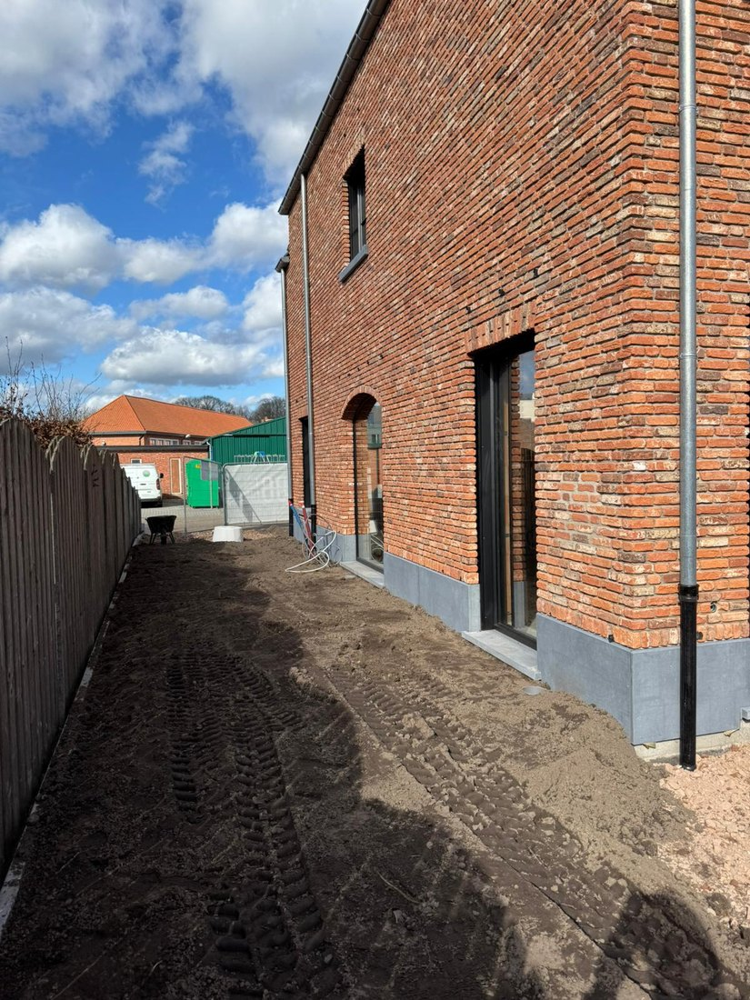
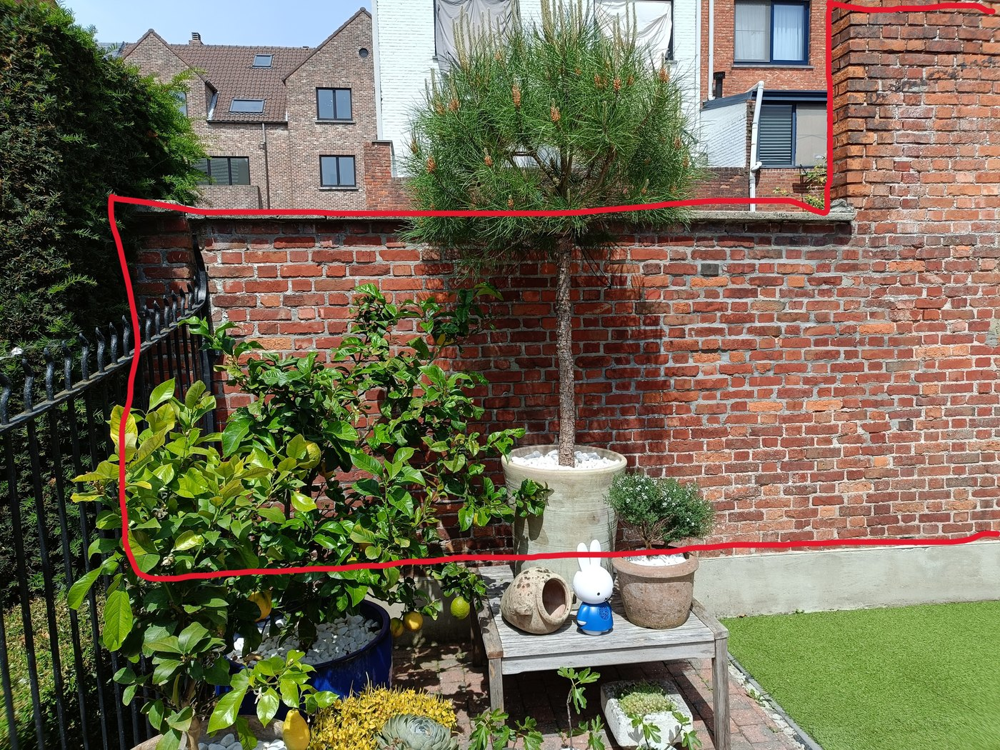
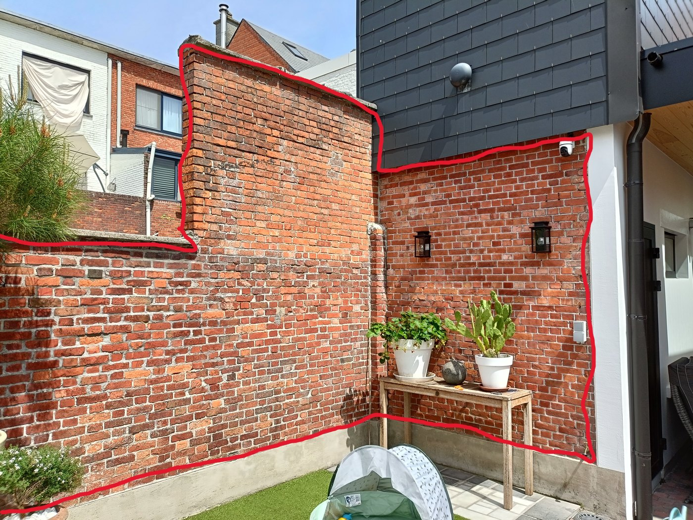
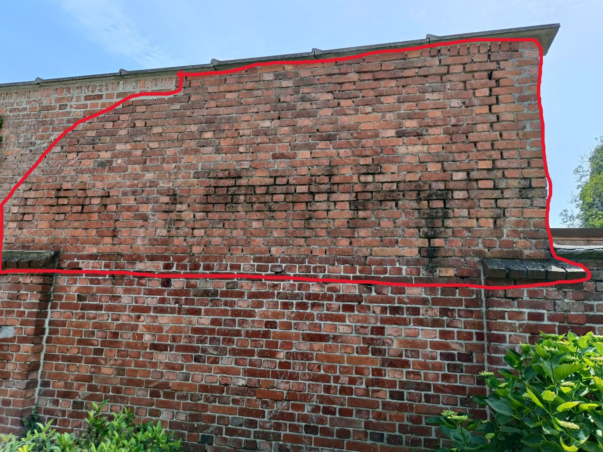
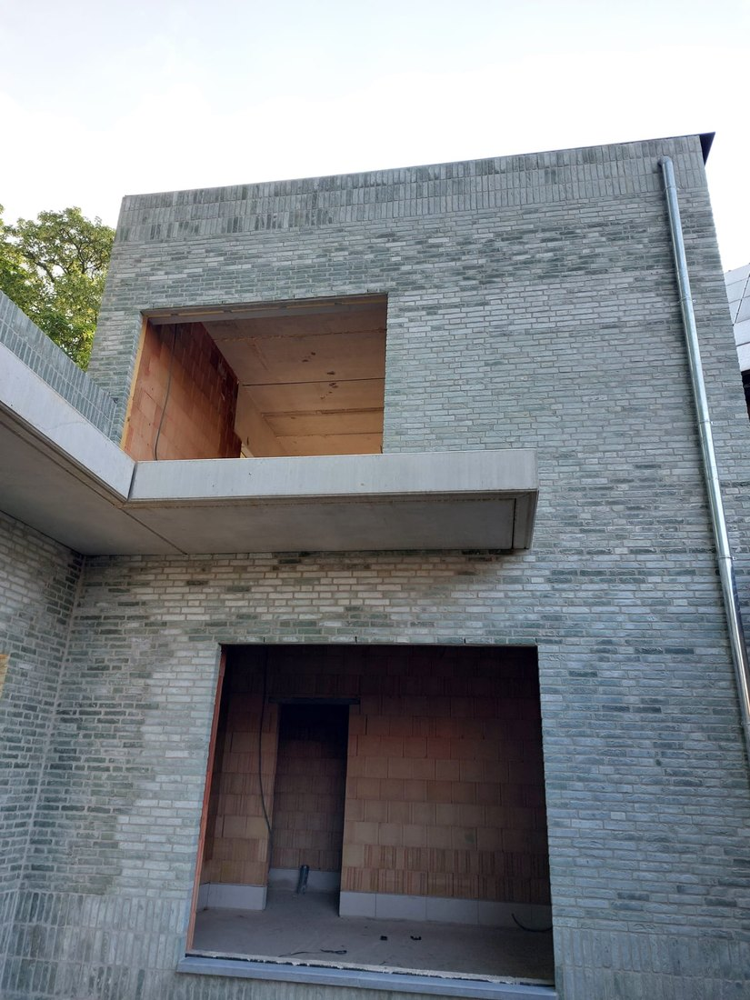
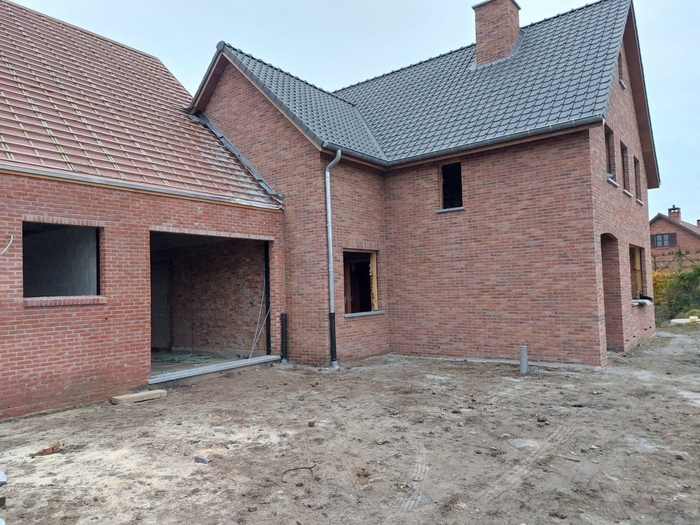
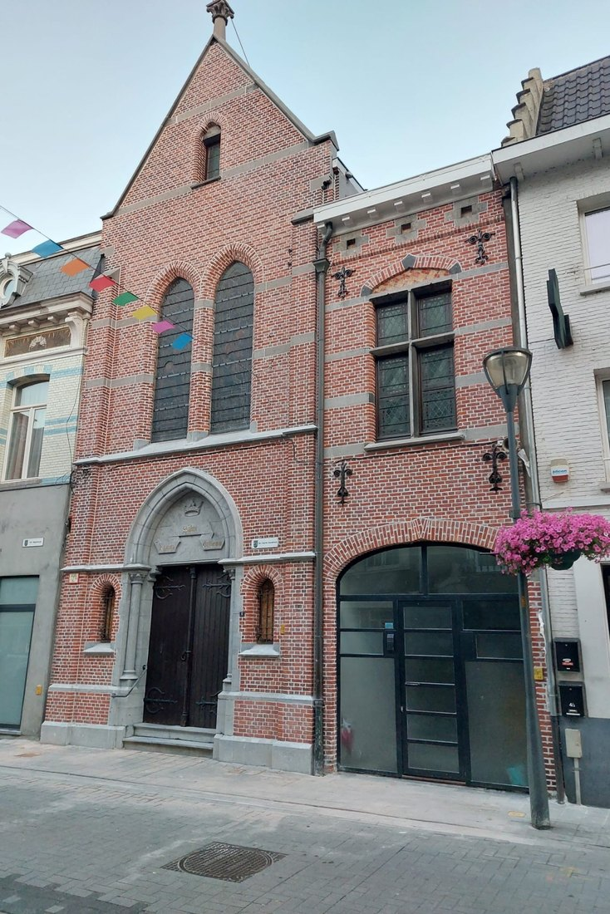
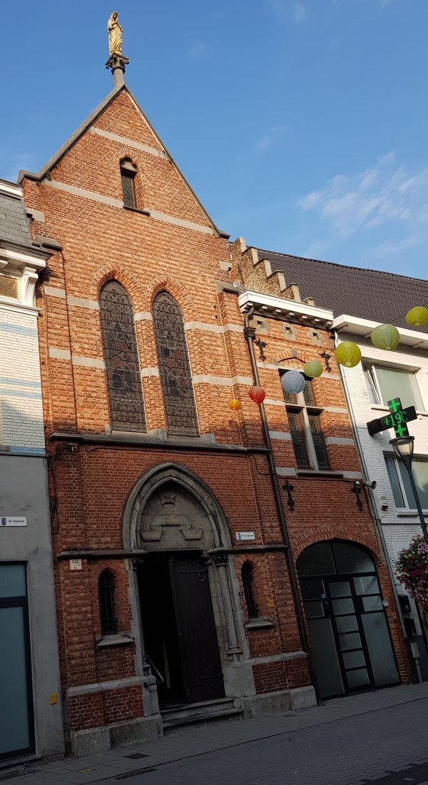
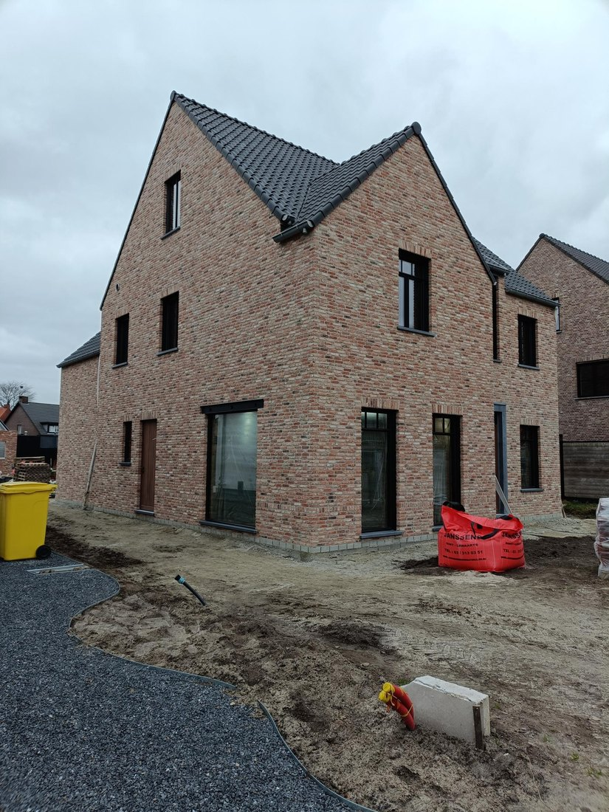
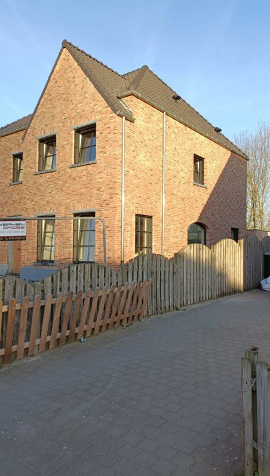
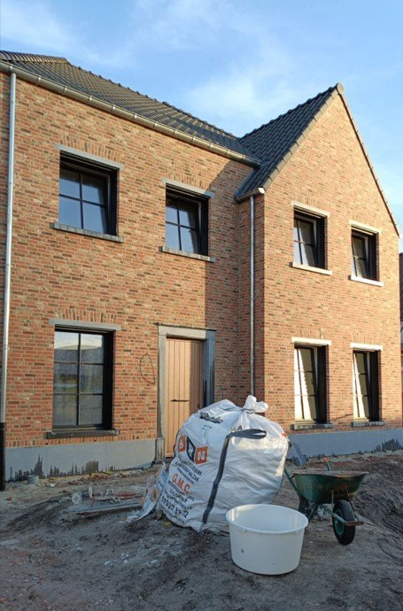
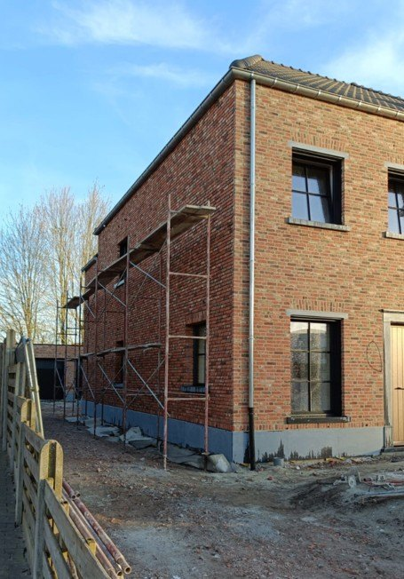
Contact
Contacteer Manu rechtstreeks voor vragen, informatie of een afspraak rond uw voegwerken of gevelrenovatie.